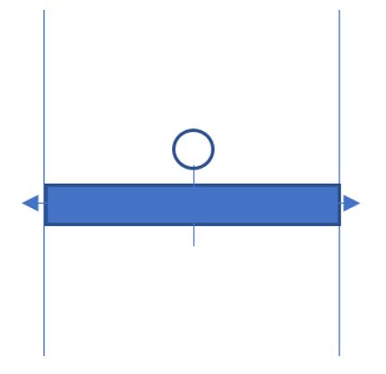
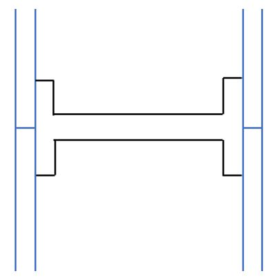
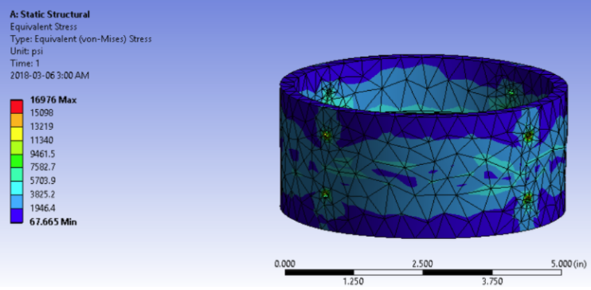
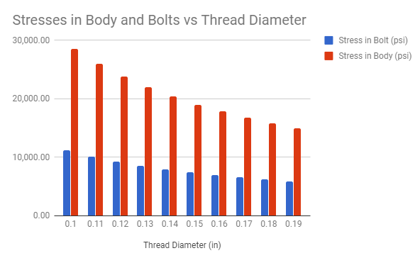
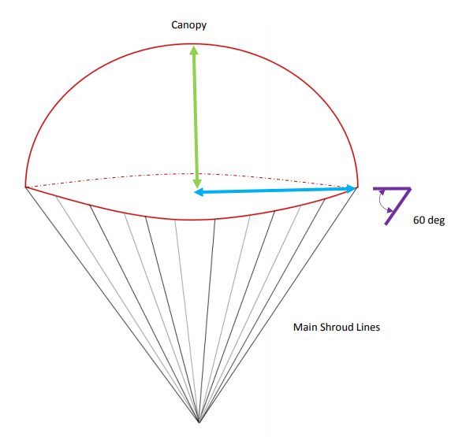
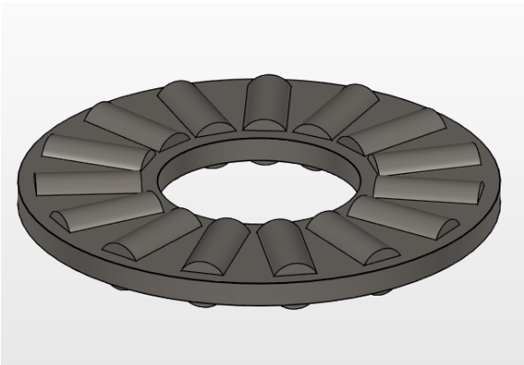
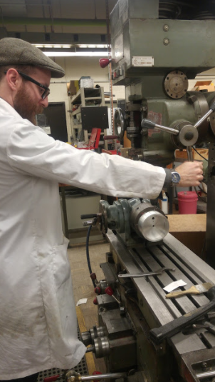
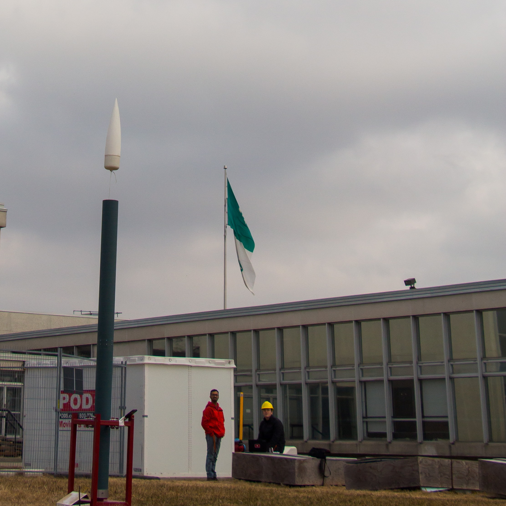

The University of Ottawa Rocket Team is a relatively new team at uOttawa and we competed in the Intercollegiate Rocket Engineering Competition (IREC) for the first time in June 2018 placing 17th out of 48 teams in our specific division, which was the 10,000 ft-COTS (commercially off the shelf). The part that I was responsible for designing and manufacturing was the recovery system, as the title suggests.
The purpose of the recovery system is to recover the rocket after reaching apogee. This is done by deploying a parachute out the body. Some engineering design challenges that were tackled were the following:
The recovery system facilitates a successful decent by allowing the parachute to hold the entire weight of the rocket plus impulse forces (experienced in the case of late deployment). An early design idea was to manufacture a metal plate that could be bolted in from outside the body of the rocket and this circular plate would hold the parachute shroud lines as seen in the following picture:
However, I soon realized that this simple design, although easy to manufacture, would prove difficult during assembly as it would be hard to align and bolt in from the outside due to the constricting shape of the body.
To improve the design the shape was changed from a simple plate to a cylindrical H-beam. This way the recovery system could be additionally used to anchor the two outer body tubes. In the following picture you can see the schematic for this design:
Now that a general design schematic was finalized the next step was to integrate a deployment system. The way in which a lot of rockets made by universities deploy their parachutes is by pressurizing the body of the rocket to ‘pop’ off the nose cone and push the parachute out. For this system we used the CD3 Adventurer Kit Carbon Dioxide (CO2) Ejection System purchased from Apogee Rockets. They seem to be a reliable place to buy rocketry related items, in fact we also purchased our phenolic blue tube from them. I’ve posted a link here for anyone interested.
The material that was chosen for the mount (outlined in black in the figure above) was aluminum 2024 because of it’s low cost, high strength and low density properties. My intuition was that quarter inch thickness of aluminum 2024 would suffice in withstanding the forces upon deployment.
The way we determined the maximum forces was to understand the worst case scenario. The worst case scenario is the situation in which the parachute does not deploy at apogee and instead deploys with a six second delay. The downward velocity at that point would be 60 m/s therefore resulting in an impulse force of ~22,800 N. In order for the recovery system to work, it needs to withstand it’s own weight plus the impulse forces and with an additional safety factor of around 2.
I used ANSYS to conduct an FEA analysis to check if the dimensions of the aluminum would suffice, and it turned out that my intuition of quarter inch were correct!
Now in order to determine the specifications on the bolts I compiled an excel sheet which calculated the stresses on the bolts and body as a function of bolt diameter, using the principles of machine design and using the following equations (of bolt and body, respectively):
$$\sigma_{bolt} = \frac {4F}{\pi d^{2}}$$ $$\sigma_{body} = \frac {F}{td}$$Where t is the thickness of the phenolic tube.
The results indicated from the excel spreadsheet was that M3 bolts would give a safety factor of 2, using 8 bolts.
Another thing we had to take into consideration was to allow for swivel motion of the parachute shroud lines to prevent them from getting tangled.
For this, initially I planned to use load bearing eye-bolts that would be mounted in the center. However after discussing with a professor we realized that the load bearing eye-bolts only allow swiveling when there is minimal load exerted on it. They are mostly used for carrying large shipping containers or for similar purposes where the swivel feature is not as important when load is applied. To fix this, we used regular eye-bolts and two thrust-needle roller bearings on each side of the mount. Lock nuts were added to prevent the eye-bolt from self screwing off.
I manufactured the base aluminum piece through a process of various machining tools. First I had to turn the piece and remove the external layer of metal to get an even diameter to hold on to via the chuck on the lathe machine. I continued turning on the lathe machine until I achieved the desired diameter. Next I bored from the inside and drilled the center holes and the carbon dioxide ejection system mounting holes.
Next we needed to have screw holes evenly spread through out the circumference to be able to bolt the recovery system from inside the rocket body. In order to do this, I had help form the machinist at our schools machine shop since we did not have the proper tools to create the drill holes with such precision.
We successfully tested the recovery system
